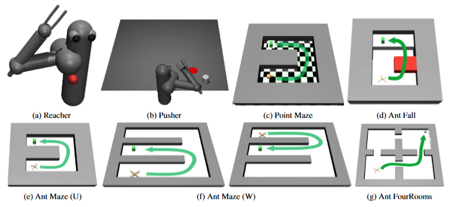
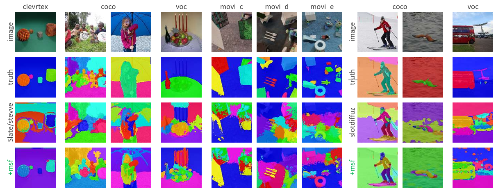
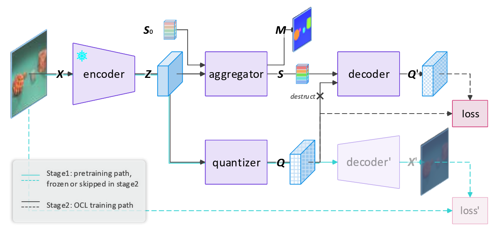
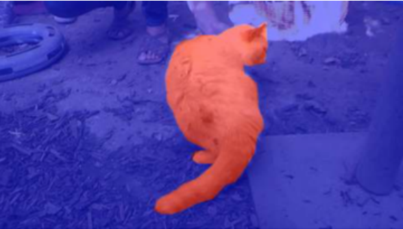
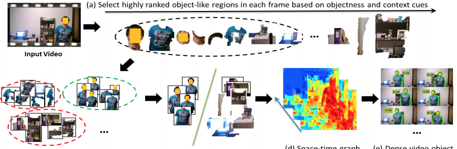
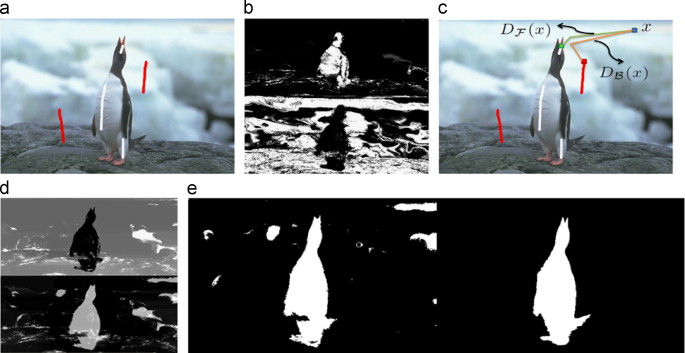

|
I am a Postdoctoral Researcher in the Aalto Robot Learning Lab, Finland, working with Joni Pajarinen. I did my PhD in the Robot Learning Lab of Aalto University and Computer Vision Group of Tampere University, supervised by Joni Pajarinen and Joni Kämäräinen. My recent research mainly explores novel algorithms for Agentic Reinforcement Learning. During 2015-2016, I worked as research assistant in Deep Learning and Bayesian Modeling group of Aalto University, supervised by Tapani Raiko and Juha Karhunen. I worked as research intern in Nokia Research Center in 2014. I have published on top venues such as ICML, ICLR, AAAI, IJCAI and one US patent in the related fields, and received one IEEE best paper (runner-up) award in ICME 2015. My research publications in collaboration with Nokia scientists have won Nokia Labs Award in 2016 and 2017. I serve as senior reviewer of RLC 2025, PC Member and reviewer of AAAI 2020-2025, ICLR 2024-2026, NeurIPS 2022-2025 and ICML 2022-2025 etc. I co-organized the RememberRL Workshop of CoRL 2025. Email / Google Scholar / Github / LinkedIn |
{kind=link}
|
My research sits at the intersection of reinforcement learning, probabilistic and generative modelling, and interactive multi-agent learning, aiming to build agentic AI systems that can plan, act, remember, and cooperate reliably under uncertainty. Selected papers and patent are listed as follows. Full list of publications can be found in my Google Scholar page. |
|  |
Vivienne Huiling Wang, Tinghuai Wang, Joni Pajarinen The Forty-second International Conference on Machine Learning (ICML), 2025 A GP-regularized hierarchical diffusion policy models uncertainty to generate subgoals, improving sample efficiency and control performance. |
|  |
Rongzhen Zhao, Vivienne Huiling Wang, Juho Kannala, Joni Pajarinen International Conference on Learning Representations (ICLR) , 2025 We propose Multi-Scale Fusion (MSF) to enhance VAE guidance for Object-Centric Learning (OCL) training. |
|  |
Rongzhen Zhao, Vivienne Huiling Wang, Juho Kannala, Joni Pajarinen ACM International Conference on Multimedia (ACM MM) , 2025 We propose simple yet effective unified architecture for OCL, which outperforms baselines in object discovery and recognition, as well as downstream visual prediction and reasoning. |

|
Vivienne Huiling Wang, Tinghuai Wang, Wenyan Yang, Joni-Kristian Kämäräinen, Joni Pajarinen The Forty-first International Conference on Machine Learning (ICML), 2024 We propose a new Gaussian processes (GPs) based method for learning probabilistic subgoal representations in Hierarchical Reinforcement Learning (HRL). |

|
Vivienne Huiling Wang, Joni Pajarinen, Tinghuai Wang, Joni-Kristian Kämäräinen Thirty-Seventh AAAI Conference on Artificial Intelligence (AAAI), 2023 We propose a novel adversarially guided subgoal generation framework for goal-conditioned HRL to mitigate the issue of non-stationarity in off-policy training. |
|  |
Huiling Wang, Tinghuai Wang, Ke Chen, Joni-Kristian Kämäräinen International Joint Conference on Artificial Intelligence (IJCAI), 2017 pdf / video We address semantic video object segmentation via a novel cross-granularity hierarchical graphical model to integrate tracklet and object proposal reasoning with superpixel labeling. |
|  |
Huiling Wang, Tinghuai Wang Computer Vision and Image Understanding (CVIU), 2016 We present a novel algorithm that detects recurring primary object and learns cohort object proposals over space-time in video. Our core contribution is a graph transduction process that exploits both appearance cues learned from rudimentary detections of object-like regions, and the intrinsic structures within video data. |

|
Huiling Wang, Tapani Raiko, Lasse Lensu, Tinghuai Wang, Juha Karhunen Asian Conference on Computer Vision (ACCV), 2016 We propose a semi-supervised approach to adapting CNN image recognition model trained from labeled image data to the target domain exploiting both semantic evidence learned from CNN, and the intrinsic structures of video data. |
|  |
Tinghuai Wang, Huiling Wang, Lixin Fan Neurocomputing, 2015 We combine geodesic distance information with the flexibility of level set methods in energy minimization, leveraging the complementary strengths of each to promote accurate boundary placement and strong region connectivity while requiring less user interaction. |
|
|
|
Reviewer, NeurIPS 2022-2025
Reviewer, ICML 2022-2025 Reviewer, ICLR 2024-2026 Program Committee, AAAI 2020-2025 |